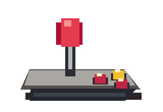

Tarde de arcade libre
Partidas y descubrimiento de los clásicos recreativos.
SELECT LEVEL
Talleres, encuentros, restauración y juegos para compartir la pasión por la retroinformática.
Explora talleres y encuentros vinculados a la informática clásica. Consulta los detalles para conocer el enfoque de cada actividad.

6 actividades para descubrir
Partidas y descubrimiento de los clásicos recreativos.
Aprende conceptos de programación en un ordenador de 8 bits.
Un acercamiento al mantenimiento de hardware histórico.
Un encuentro alrededor de los videojuegos de 8 bits.
Descubre cómo los equipos clásicos producían música.
Pantalla, placa, mandos: las piezas de un clásico.
El club propone encuentros para explorar máquinas, restaurar equipos y aprender programación. Los horarios se anunciarán en el calendario cuando estén disponibles.
Propón un taller, torneo o encuentro para valorar con el club.